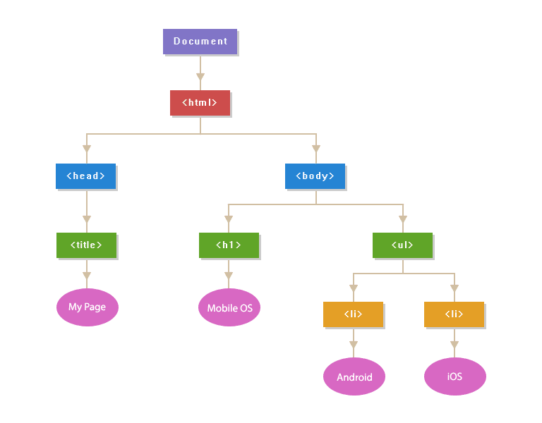

Think about the human anatomy. Our skeleton gives us our shape. Without our skeleton, all we are is
mush:
CSS on the other hand gives HTML its features. Without any features we would just be walking
skeletons... Harry (above) wouldn't have any features, any eyeballs... nothing.
So that's the difference. But of course, without one, you can't have the other. No one wants
to look at a plain
white page on the internet with some words packed onto it.
In plain english, the two might seem the same. After all, they both hold data in a list like fashion.
Here's how they differ. If you want to access information from an array, the first item starts at the
zeroeth index, which means that item 1 is list item 0. Let's say we have a shopping list. To access
the first item on
the shopping list, you would type shoppingList[0].
For an object such as "Toy", it might hold a list of features for the toy, e.g. arms, legs, eyes, etc.
Each feature, for example, "arm" might hold a value representing the number of arms the toy
has, for example 8. In order for us to access the toy's arm feature to figure out how many arms
the toy has, we would use the command "toy.arms" and this would print 8.
In the simplest term, they repeat actions for you. For example, If you want to add two numbers
together you just add them, like 5 + 3. What if you needed to add 5 pairs of numbers?
20 pairs? 100 pairs? This is where functions come in. For this example we can define a certain
number, "a" and the other number "b". All you need to do is tell the function to add
a and btogether!
Control flow is just a matter of conditions. Let's think about laundry, or any
daily task you carry
out.
The first condition you want to check is "Do I have dirty clothes".
If the answer is yes (or "true" in programming)
then you need to do laundry.
Or else, you don't.
Another condition you might want to check is "is the weather sunny".If that question
evaluates
to true then
you can hang the washing outside, or else you hang it inside.
The DOM is an acronym, which stands for Document Object Model.
In order for us
to manipulate the
HTML in terms of giving it design using CSS, or giving it functionality using
JavaScript
, we need access to each part of the HTML. We want access to each header,
paragraph, image, and so on.
The DOM was created so that we could do that. The way to picture the DOM is like
a tree:

How this helps us is by typing in certain commands, we can gain access to each part of the
document, giving us
a lot of flexibility and enabling us to design each intricate part of the
web page. An example of
how we might interact with the DOM in terms of CSS is by typing
"p" to gain access to all paragraphs in the document
and making its "color" red.